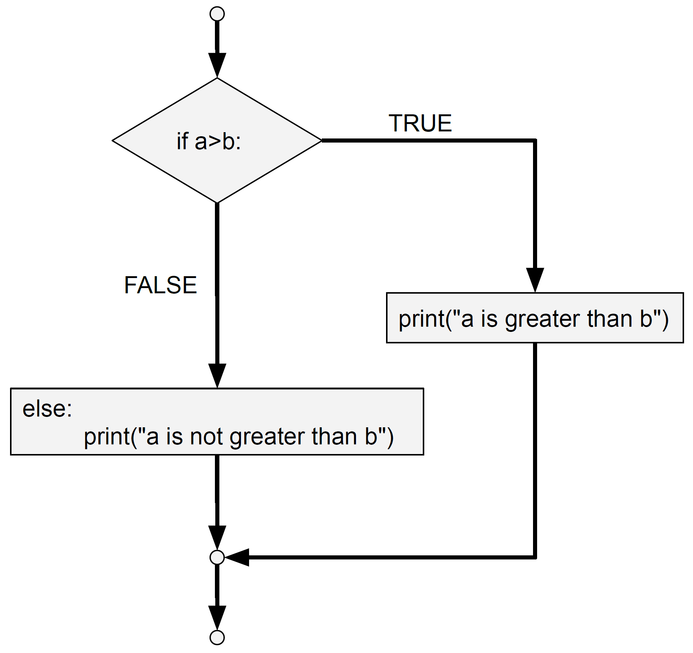

Loops and Conditional Statements¶
Loops and conditional statements are very common elements of scripts. These structures allow us to specify what should happen when a particular condition is satisfied or not.
1. Formulating Conditional Statements¶
Python supports many of the usual logical conditions from mathematics:
Equals:
a == bNot Equals:
a != bLess than:
a < bLess than or equal to:
a <= bGreater than:
a > bGreater than or equal to:
a >= b
In these examples, a and b can take different values and they can be of different datatypes. However, be aware that certain data types are not suitable for praticular logical contitions. For example, if we have a piece of text “Univeristy”, which is a string, it will be impossible to evaluate if this is greater than another value. Although this may seem obvious in this example, it could be possible that you stored two numbers (e.g 2 & 4), but you stored one of them as a string instead of an integer. In this case, you will also receive an error. Please see here for more on datatypes such as strings and integers.
Exercise 1: Understanding Conditional Statements¶
- Start by specifying two variables: x=5, y=10, z=10 at the start of your script.
- What happens if you now run "x == y" in the console?
- What datatype is the output that you get? If you are not sure, store the output to a variable (e.g. var) by running "var= x==y" and run "type(var)".
- Write a conditional statement to confirm that x is not equal to y.
- What happens if you run "y < z" and "y <= z" ? Explain why the results are different.
2. If-Statements¶
If statement allow you to check whether a particular statement is true or not. Depending on the boolean evaluation (true versus false), a particular piece of code (or nothing) is executed.
The header line of the if statement begins with the keyword if followed by a boolean expression and ends with a colon (:). The indented statements that follow are called a block. This block contains the code that should be executed when the condition is satisfied. Each statement inside the block must have the same indentation. The first unindented statement marks the end of the block.
if <conditional statement>:
<code to be executed when conditional statement is TRUE>
Are you not sure what indentation is and why it is so important in Python? Please check out the section on “Indentation” on the help page. You will find everything you need to know about indentation there!
If you would like to specify what happens when the conditional statement is not true, you can use a if else.
if <conditional statement>:
<code to be executed when conditional statement is TRUE>
else:
<code to be executed when conditional statement is FALSE>
We can also chain conditional statements to be checked using a if elif else structure as shown below.
if <first conditional statement>:
<code to be executed when first conditional statement is TRUE>
elif <second conditional statement>:
<code to be executed when second conditional statement is TRUE>
elif <third conditional statement>:
<code to be executed when third conditional statement is TRUE>
...
else:
<code to be executed when all conditional statements above are FALSE>
In the case that you do not want to execute any code in a particular situation, you can use pass.
Important things to keep in mind when writing if statements:
Be aware of the indentation. That is, the code that must be executed is indented by one level. Click here to learn more about identation.
Do not forget the colon (:), it seperates the header of the statement from its body.
Several forms of if statements are possible, as shown below. They differ in the amount of conditions that are checked.
Below you can find several examples of if statements.
2.1 One condition¶
The most basic form of an if statement checks one condition. If this condition is true, the code below it will be executed. If the condition is not true, it will always perform the second piece of code.
If this is true, do that. Otherwise, do this.
a = 12
b = 5
if a > b:
print("a is greater than b")
else:
print("a is not greater than b")

2.2 One condition, pass¶
As adressed above, we can use pass to specify that we do not want any code to be executed in a particular situation. In the example below, this is the case when the if statement (a > b) is not true.
If this is true, do that. Otherwise, do nothing.
a = 12
b = 5
if a > b:
print("a is greater than b")
else:
pass

Exercise 2: Writing an IF Statement with one Condition¶
- How many conditions will you need to specify?
- First, create a variable that stores the temperature threshold value.
- Next, create a variable that stores the value of the actual room temperature. You can chose any value to represent the hypothetical current temperature.
- Formulate a statement that captures the rule (*when the actual temperature is below the threshold*).
- Formulate what should happen if the condition is satisfied. As means of simulation, print "heating" when the heater is turned on.
- What did you use to specify that nothing should happen if the condition is not satisfied?
- Test your program for several different actual room temperature values. Does it behave as expected?
- You would like to tell from the output of your program if the heater is not turned on (instead of simply not getting any output). How can you do this?Try to implement this and test your program again.
2.3 Multiple conditions¶
As mentioned before, we can chain multiple statements using a if elif else structure. In this way we can capture all situations where the program should perform specific behavior.
If this is true, do that. Else check if this is true, and do that. Else do this.
a = 3
b = 5
if a > b:
print("a is greater than b")
elif a == b:
print("a is equal to b")
else:
print("b is greater than a")

Exercise 3: Writing a an IF Statement with Two Conditions¶
- How many conditions will you need to specify?
- First, create the variables that store the actual temperature value and the threshold values.
- Formulate all conditional statements that are applicable to the situation.
- For each of the conditions, print what should happen in terms of the activation of either the heating or airco systems.
- Test your program for several different actual room temperature values. Does it behave as expected?
3. While-Loops¶
In a While-loop, a certain script is performed as long as a particular boolean statement evaluates to True.
In the example below, we introduce an indexing variable. Every time the script is executed (the value of i is printed), the index (i) is increased by 1. That is, we are counting how many times the script has been executed.
(Note that we can use i += x to specify a step increase of x units. Hence, i += x is a short way of writing i = i + 1).
The boolean statement i < 10 ensures that when the script has been ran 10 times (so when our index is equal to 10: i = 10), the script will no longer be executed again.
While this is true, do …
i = 1
while i < 10:
print(i)
i += 1 #i = i + 1
A while-loop can be interrupted or loops in a while-loop can be skipped using the break and continue statements.
i = 1
while i < 10:
print(i)
if i == 5:
break
i += 1
i = 1
while i < 10:
print(i)
if i == 5:
continue
i += 1
Exercise 4: Understanding While-Loops¶
What happens when you do not increment the index variable? That is, when we leave out the final line of the code (i += 1) in the first example.
Try to code a while-loop that prints each letter in your name seperately to the console window.
Draw a diagram like those shown in the earlier section on IF-statements that describes your while-loop.
4. For-Loops¶
A for loop iterates over a sequence of values and executes a particular piece of code for each of these items. As you might notice, it can actually often replace a while loop.
Recall that lists, tuples, sets and dictionaries contain multiple items. For example ["Volvo", "Ford", "Mercedes"] is a list of three string items, each of which represent the name of a car brand. We can use a for-loop to iterate over these items and print each of them or perform any other kind of operation.
Likewise, we can also iterate over characters in a string.
For every element in this entire sequence, do …
cars = ["Volvo", "Ford", "Mercedes"]
for carName in cars
print(carName)
city = "Eindhoven"
for letter in city
print(letter)
Exercise 5: Understanding For-Loops¶
Reconsider the while-loop you developed in the previous exercise, which printed each character of your name. Would you prefer performing this action with a while-loop or a for-loop? Why? (Are there multiple reasons?)
Develop a for-loop to print each character of your name.
Create a list of the names of three of your friends. Use a for-loop to print a sentence saying “<Friend’s name> is my friend.” for each of your friends.